Налоги¶
Информация по налогам ИП в Польше.
Бухгалтерия для JDG: Legal Tax Level
PIT: подоходный налог¶
Доступные системы налогообложения физических лиц (PIT - Personal Income Tax) для JDG по состоянию на 2022 год:
Skala podatkowa (общий налог)
это налог доступный по умолчанию при регистрации JDG и единственный доступный для работников по найму (UoP). Составляет 12% для доходов от 30 до 120 тыс. зл. и 32% - для всего, что выше. Доход до 30 тыс. зл. налогом не облагается. Этот налог позволяет уменьшить налогооблагаемый доход за счет необходимых для деятельности расходов (ноутбук, монитор, бухгалтерия, ПО и т.д.). Также позволяет подать налоговую декларацию вместе с супругом, что при отсутствии дохода у одного из супругов, уменьшает налогооблагаемый доход за счет дополнительных 30 тыс. зл. не облагаемого дохода.
Podatek liniowy (пропорциональный налог)
это некогда (до популяризации ryczałtu) самый выгодный налог в едином размере 19% вне зависимости от размера доходов для тех, значительная часть дохода которых попадала под 32% общего налога. Отличительной особенностью пропорционального налога (podatek liniowy) на фоне фиксированного (ryczałt) является возможность уменьшения налогооблагаемой суммы за счет расходов, так же как и в случае с общим налогом (skala podatkowa). Но, в отличие от общего налога, доход до 30 тыс. зл. налогом облагается, а совместная подача налоговой декларации с супругом недоступна.
Ryczałt (фиксированный налог)
это ныне очень популярный налог в размере от 2% до 17% в зависимости от вида деятельности JDG. Для программистов - 12%. Важный нюанс этого налога в том, что расходы никак не влияют на налогооблагаемый доход, т.е. налог рассчитывается исключительно на основании полученного дохода. Подача налоговой декларации с супругом недоступна.
Некоторые моменты, на которые следует обратить внимание при выборе системы налогообложения:
- Планируемый годовой доход. При доходах ниже определенной суммы общий налог может быть выгоднее других вариантов за счет суммы необлагаемого дохода и возможности учесть расходы.
- Размер социальных взносов (ZUS) отличается в зависимости от выбранной системы налогообложения и суммы годового дохода.
- Вид деятельности при фиксированном налоге (ryczałt) определяет ставку налога. Кстати, один инвойс может быть выставлен на несколько видов деятельности с разными ставками.
- Планируется ли подача налоговой декларации совместно с супругом. Например, при отсутствии дохода у одного из супругов, сумма не облагаемого налогом дохода увеличивается в 2 раза.
- Наличие крупных расходов, связанных с деятельностью JDG, которые могут существенно снизить сумму налогооблагаемого дохода.
- Наличие детей, на которых распространяется скидка.
- Планируется ли ипотека. Размер доступного кредита при фиксированном налоге даже при высоких доходах во многих банках может быть низким, либо банк вообще может не обслуживать лица с такой системой налогообложения.
- Прочие скидки, которые доступны только для некоторых систем налогообложения.
Как узнать свой счет для оплаты налогов¶
Сгенерировать счет для оплаты подоходного налога можно на сайте налоговой на основе своего идентификатора NIP.
Налоговые калькуляторы¶
- https://www.podatki.wtf/
- https://ladnepodatki.pl/
- https://calculla.com/polish_net_gross_earnings_calculator
- https://zarobki.pracuj.pl/kalkulator-wynagrodzen
- https://jakipit.pl/
Podatek dochodowy справка об отсутствии задолженности¶
Заказать справку об отсутствии долгов по налогам можно на сайте urzadskarbowy.gov.pl. Справка бесплатная. Эта возможность появилась в августе 2022 года. Справка выдается очень быстро, в автоматическом режиме.
Переходим по ссылке urzadskarbowy.gov.pl. Логинимся в свой онлайн кабинет налоговой, например через Profil zaufany
и далее делаем следующее:
- Шаг 1. Нужно разрешить e‑Correspondence, иначе в конце шага 8 вас ждет неприятный сюрприз - цикл без возможности продолжить отправку:
 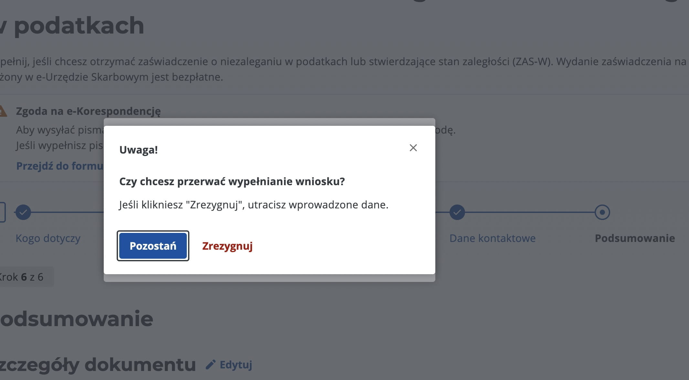Идем в
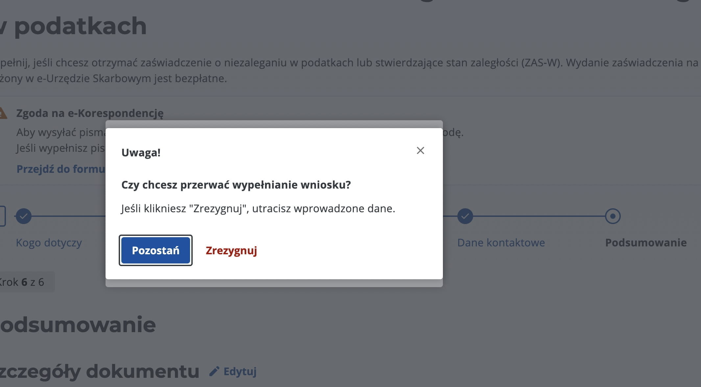Идем в Ustawienia>Zgody i powiadomienia, и привязываем email и/или телефон. - Шаг 2. В боковом меню выбираем
Dokumenty>Złóż dokument. И в списке документов находимZaświadczenie o niezaleganiu lub stanie zaległości w podatkach. 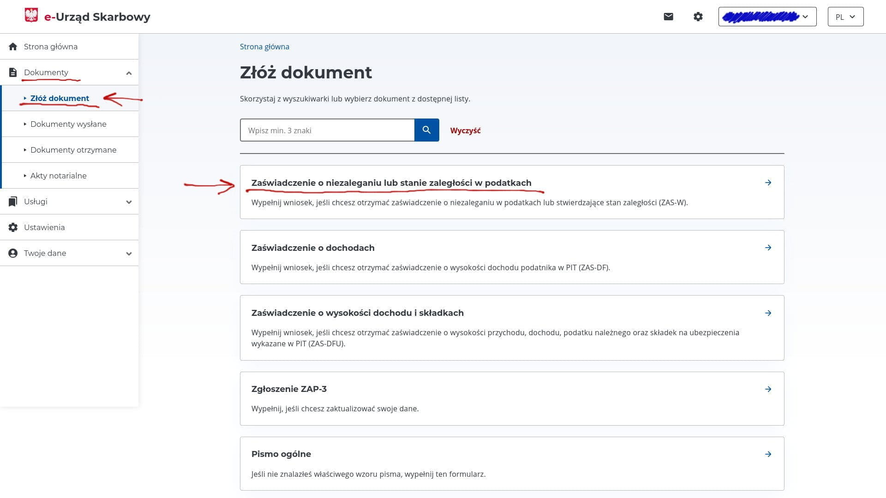 - Шаг 3. Выбираем тип справки -
o niezaleganiu w podatkach, то есть справку о том что долгов нет. 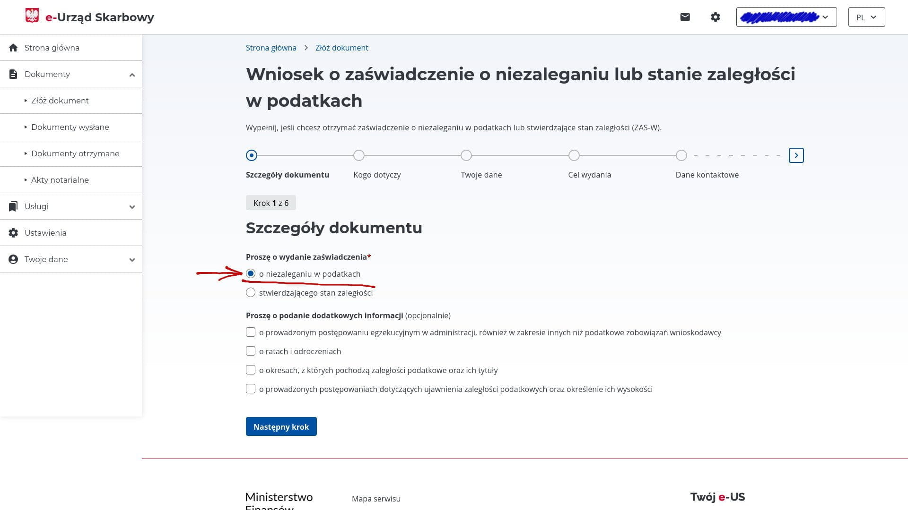 - Шаг 4. Выбираем для кого будет выдана справка -
za siebie, то-есть для себя. 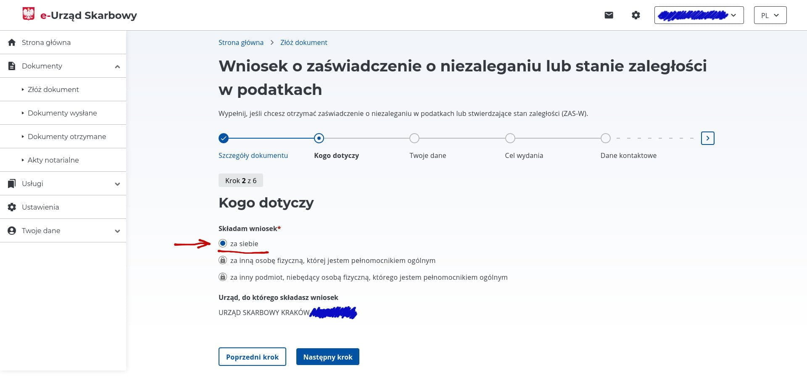 - Шаг 5. Выбираем какой идентификатор будет напечатан на справке -
PESELесли вам справка нужна как для физического лица, илиNIPсоответственно как для юридического лица. От этого будет справке меняется одна строчка Dane identyfikacyjne podatnika на выбранный вариант. Данные с адресом заполняются автоматически из того что вы подали в налоговую при регистрации JDG. 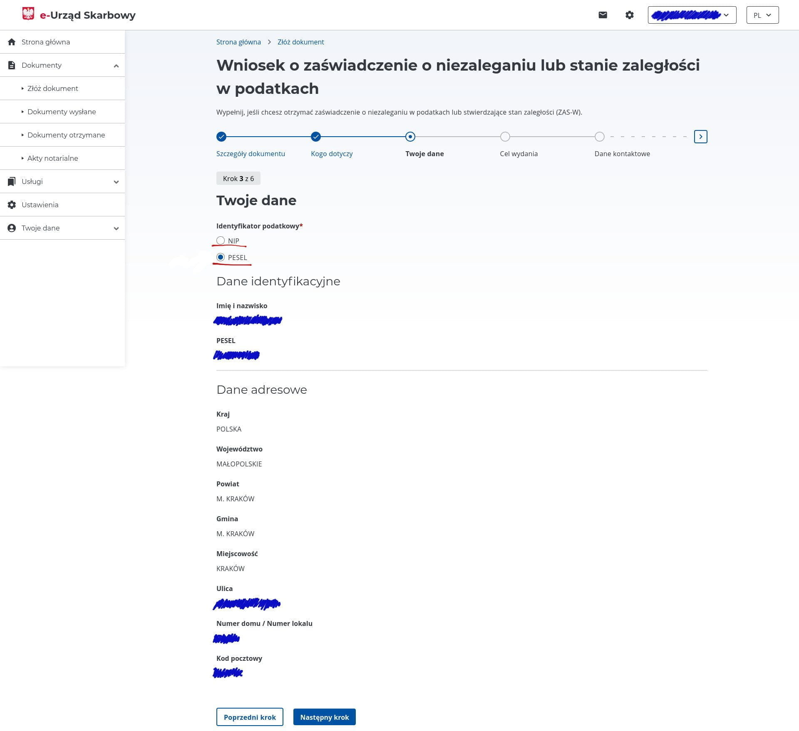 - Шаг 6. В свободной форме пишем, для чего берем справку, например -
w celu uzyskania karty pobytu. Справа можно посмотреть примеры, если нажать наWięcej. Похоже, что на конечный результат это не влияет. 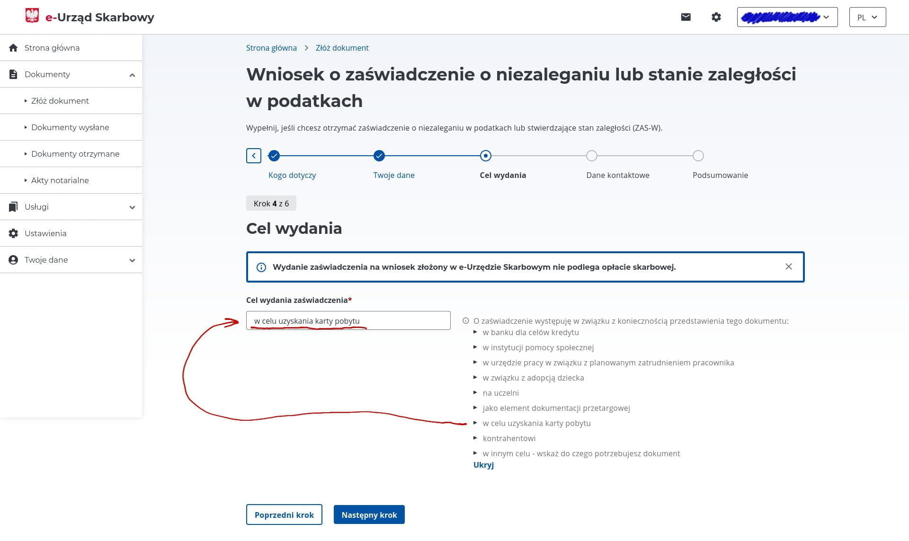 - Шаг 7. Не обязательно, но можно оставить свой телефон и почту для связи. Похоже, этот пункт тоже не влияет на результат. 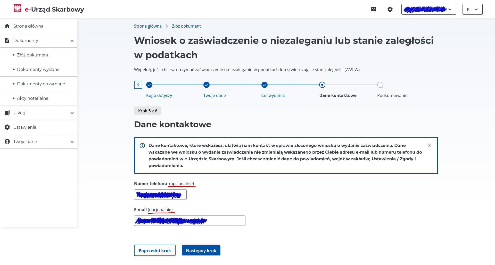
- Шаг 8. Проверяем, что все данные вписаны верно и жмем кнопку
Akceptuj i wyślijдля отправки. В появившемся всплывающем окне еще раз подтверждаем нажатием кнопкиWyślij wniosek, что хотим отправить запрос. 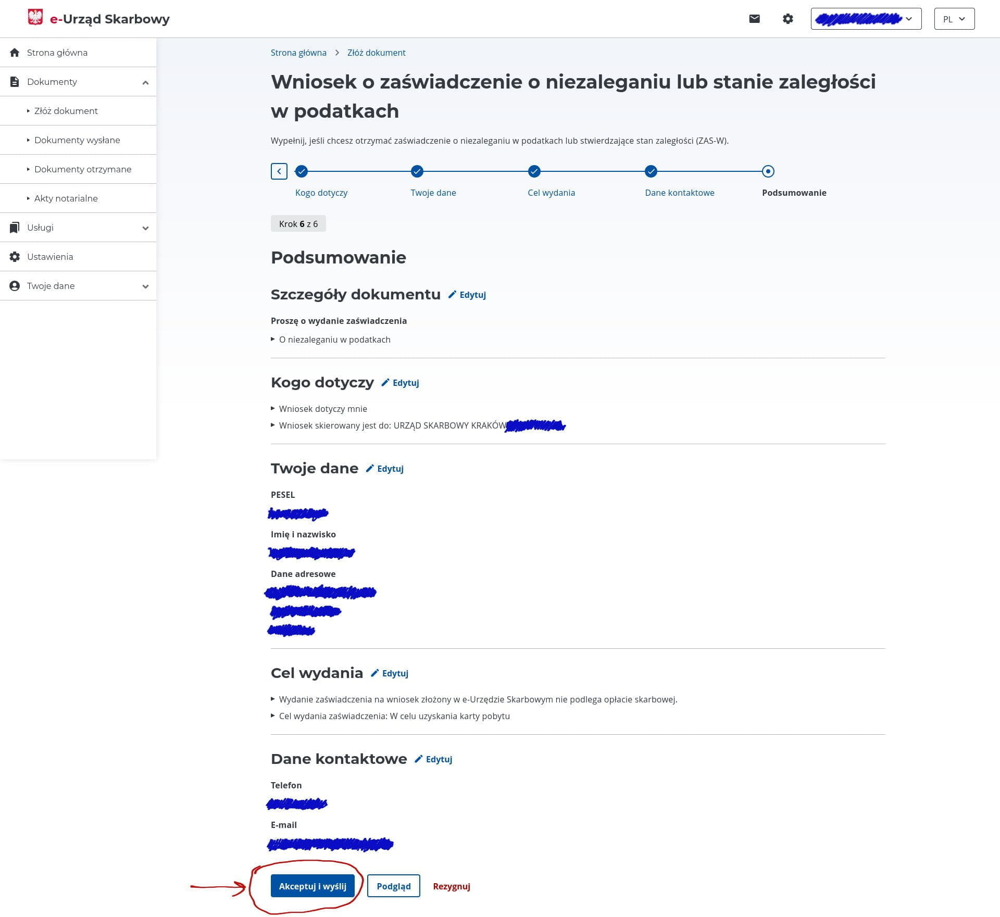 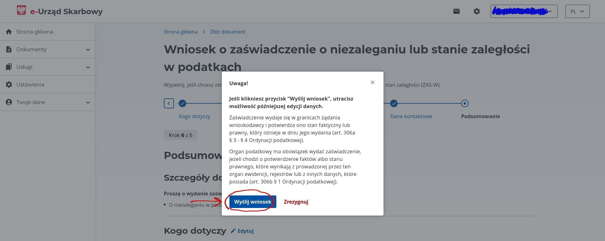 - Шаг 9. После отправки запроса, будет написано, что рассмотрение произойдет в течение семи дней. Но похоже, что все полностью автоматизировано, и ответ приходит в течение пары минут, даже ночью и в выходные. Сообщение о готовности справки приходит на почту, а также в самом e-Urząd аккаунте. Чтобы скачать саму справку, справа в меню выбираем
Dokumenty>Dokumenty otrzymane. Там будет список всех полученных документов, жмем на кнопкуOdbierzи скачиваем pdf со справкой. Справка будет на двух страницах, ниже пример как она выглядит. 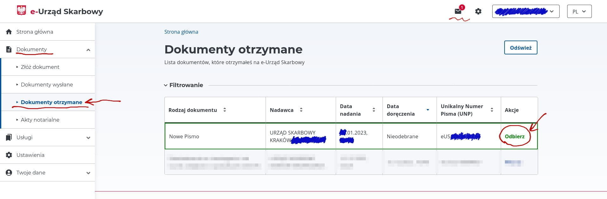 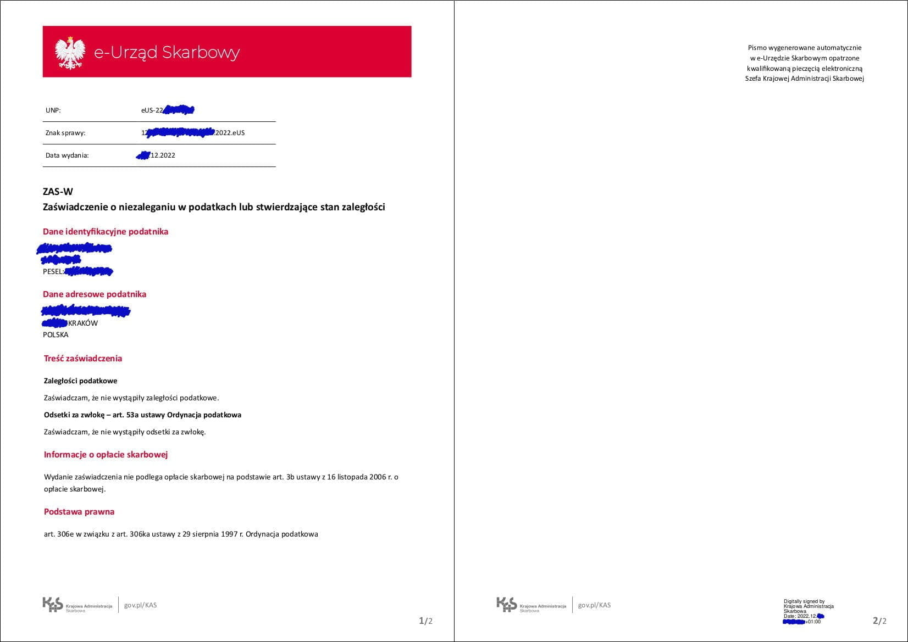
VAT¶
VAT (Value-added tax) aka НДС (Налог на добавленную стоимость) — косвенный налог, который взимается с большинства продаж товаров и услуг. Проще говоря, НДС — это своеобразная надбавка к стоимости товара. Как правило, бизнес платит её не сам, а выставляет счёт конечному покупателю.
Для примера возьмем самую простую схему: Предприятие -> Ритейлер -> Покупатель
Предприятие продает Ритейлеру товар за 1000 зл и платит с продажи 230 зл VAT государству.
Ритейлер продает товар Покупателю за 3000 зл и должен заплатить 690 зл VAT, но поскольку 230 зл он уже заплатил Предприятию, то он берет эту сумму в зачет и должен перечислить государству только 460 зл. Т.е. заплатить VAT только с добавленной стоимости в 2000 зл(3000 - 1000).
Если Ритейлер покупает товар у Предприятия для себя и не может взять VAT в зачет, то он может обратиться к государству с просьбой вернуть уплаченные Предприятию 230 зл VAT обратно.
Внутрипольский VAT¶
Вы обязаны зарегистрироваться как плательщик VAT в следующих случаях:
- Ваш облагаемый доход (сумма всех доходов от предпринимательской деятельности, которая фактически поступила на ваш счёт) превышает 200_000 злотых / год и фирма, с которой вы сотрудничаете, находится в Польше (польские заказчики). Если вы единожды превысили данный лимит, то становитесь плательщиком VAT, вне зависимости от дальнейших доходов.
- Один из кодов PKD вашей деятельности является консалтингом - 62.02.Z.
- Вы хотите списывать VAT с покупок на фирму (прим. Ноутбук, телефон, мебель и прочие вещи очень нужные для работы ИП).
Как проверить регистрацию?
Это можно сделать на сайте налоговой - это так называемый белый список (biała lista) всех плательщиков VAT.
VAT заметки
- VAT составляет 23%
- На biznes.gov.pl есть отдельная страничка про VAT.
VAT-EU¶
Если вы планируете работать на страны EU, вам необходимо зарегистрироваться как плательщик VAT-EU в обязательном порядке.
При этом вам желательно иметь адрес деятельности и разрешение на него до подачи заявления. Экспорт услуг не облагается
VAT, соответственно, вы в своем инвойсе не добавляете стоимость VAT. На инвойсах обязательно ставим отметку Reverse Charge.
Примечание: VAT платит заказчик в своей стране и по своим правилам. Но в месяцы, когда выставляли фактуры этим заказчикам, нужно подавать декларацию VAT как отчет.
После регистрации в базе плательщиков VAT EU (внёсек VAT-R) добавьте префикс PL к цифрам вашего NIP - это и будет ваш EU VAT number.
Как проверить регистрацию?
Проверить, что ваш контрагент является VAT-EU плательщиком можно здесь.
VAT в другие страны¶
Экспорт за пределы EU не облагается VAT, регистрироваться нигде
не нужно. На инвойсах в поле "ставка VAT" указывайте np., и
обязательно напишите в комментариях:
Комментарий в инвойсе
Reverse charge - VAT is charged to the buyer. Do rozliczenia podatku VAT zobowiązany jest nabywca usługi (odwrotne obciążenie).
FAQ¶
Также смотрите список вопросов и ответов в разделе FAQ.